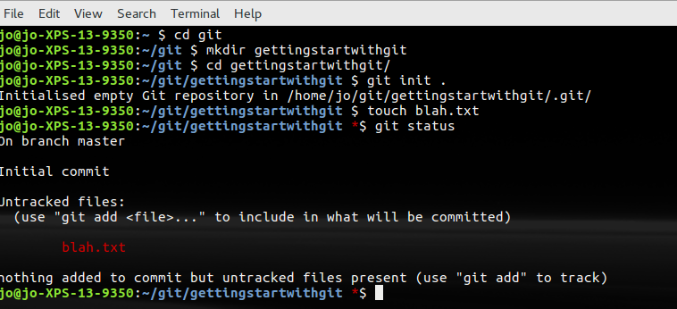
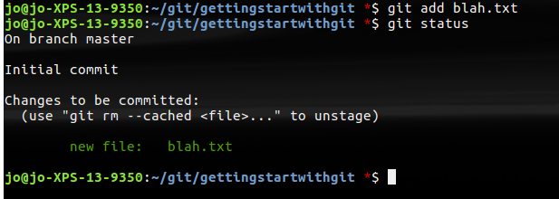
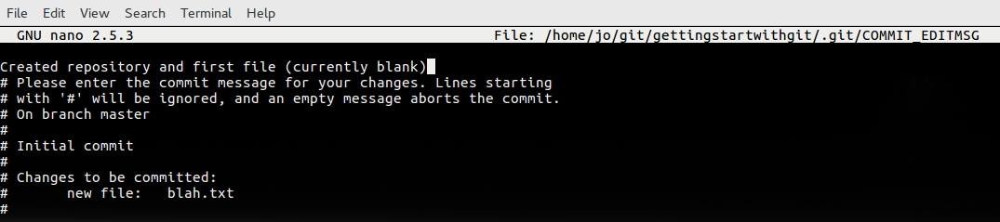
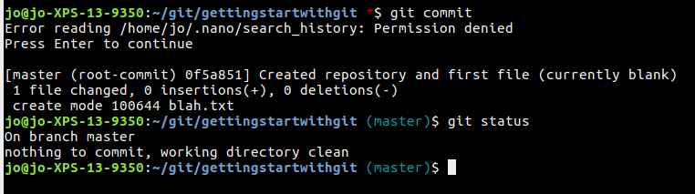
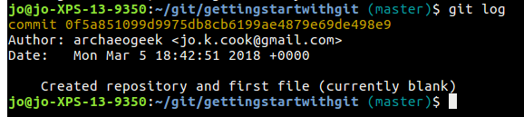
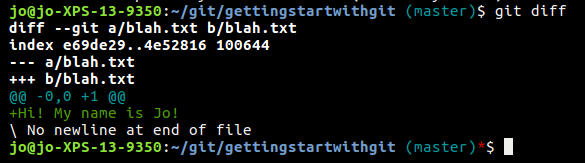

The three stages of Git
Files in a repository go through three stages before being under version control with git:
- Untracked: the file exists, but is not part of git's version control
- Staged: the file has been added to git's version control but changes have not been committed
- Committed: the change has been committed
Git-status is used to understand what stage the files in a repository are at.
git status
The output of this command not only tells you the stage of the files in your repository but also gives you some handy tips on what to do next.

Stage
So our next stage is to add our files to the staging area:
git add blah.txt
If we re-run the git status command at this point the output has changed:

Commit
The final stage is to commit the change we have made. We do this by recording a short message that explains what we did and why. This human-readable explanation will go alongside Git's own record of the change and the file structure snapshot at that point.
git commit
This pops open your default text editor (depending on what you configured in your setup stage) and asks for a commit message. The screenshot below shows an example using the nano editor on linux:

Once your commit message has been saved and you are back at your git command prompt, you will see a summary of the changes git has made.
Running git status again will tell you that your "working directory is clean", in other words you have no untracked files or uncommitted changes:

Note that we can shorten these steps slightly using the -m flag to the git commit statement. Staging and committing can therefore be done in one go using the following syntax:
git commit -m "First commit of currently blank text file"
Also, running the git log command will give you a nicely formatted record of your changes:
git log

Note that long string of characters and numbers. That's an unique ID, or SHA-1 checksum, for that particular commit. You might sometimes need to refer to this!
Let's make a change to the file so we can try out some other commands...
In your text editor of choice, add a line to blah.txt that says what your name is, and save the file.
We can view the difference between that version of the file and the committed one (eg the changes) using the following command:
git diff
This should give output similar to the following:

Again we need to add this file to the staging area and then commit it's changes. Since the file is already in the repository, we can use another shortcut to add it and commit it in one go:
git commit -am "Added name to blah.txt"
Running git diff again should show no changes, as the file and repository are up to date.
One useful command in this section is the --amend flag for git commit, which allows you to amend the previous commit, for example to fix a spelling mistake.
git commit --amend
Ignoring files
There are many scenarios where you might end up with files in your repository that you don't want to place under source control. These might be backup files that text editors create, compiled python files (.pyc) or even files with sensitive information in, such as passwords. You can place these in a file called .gitignore (which will be hidden by default).
Removing and renaming files
Git uses the unix mv (move or rename) and rm (remove) commands, but also deals with the tasks of staging and unstaging the files too.
It's important to note that you need to use a different version of the git rm (or even just rm) command depending on what you want to do
| command | operation | consequence |
|---|---|---|
| rm <file> | (linux or mac) removes a file that hasn't been added to the repository yet | deletes the file from your file system |
| del <file> | (windows) removes a file that hasn't been added to the repository yet | deletes the file from your file system |
| git rm <file> | removes the file from the repository | deletes it from your file system |
| git rm --cached <file> | removes the file from the repository | doesn't delete it from your file system |